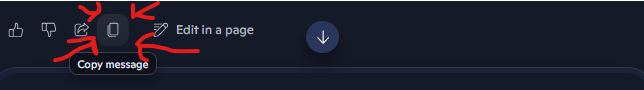

📝 Practice Test Generator
Create your own practice tests from JSON files
✨
Create New Test Script
Create, validate and download JSON file for the program to read
📝
Edit Existing Test Script
Upload and edit existing JSON test file
🎯
Run Practice Test
Upload a JSON test file and start practicing
Easy Test (Multiple Choice / True-False)
Copy the text below and paste it into Copilot along with your course material file:
Did you copy from Copilot's clipboard?
After Copilot generates your test, use the Copy message button to copy the response:

Format Instructions:
- Each question starts with
Q# (question number)
- Each answer starts with
A# (matching question number)
- Use format "Question | Option1 | Option2 | ..." for multiple choice
- Answer format "CorrectAnswer | Explanation: details"
Example format:
Medium Test (Fill in the Blanks)
Copy the text below and paste it into Copilot along with your course material file:
Did you copy from Copilot's clipboard?
After Copilot generates your test, use the Copy message button to copy the response:
Format Instructions:
- Each question starts with
Q# (question number)
- Each answer starts with
A# (matching question number)
- Use ___ for blanks in questions
- Answer format "Blank1 | Blank2 | ... | Explanation: details"
Example format:
Hard Test (Short Answer)
Copy the text below and paste it into Copilot along with your course material file:
Did you copy from Copilot's clipboard?
After Copilot generates your test, use the Copy message button to copy the response:
Format Instructions:
- Each question starts with
Q# (question number)
- Each answer starts with
A# (matching question number)
- Plain text questions and answers
- Answer format "Explanation: details"
Example format:
Select Test to Edit
Choose which test you want to edit:
Edit All Tests
Edit and validate all test types below:
Easy Test (Multiple Choice / True-False)
Format Instructions:
- Each question starts with
Q# (question number)
- Each answer starts with
A# (matching question number)
- Use format "Question | Option1 | Option2 | ..." for multiple choice
- Answer format "CorrectAnswer | Explanation: details"
Example format:
Medium Test (Fill in the Blanks)
Format Instructions:
- Use
___ (three underscores) for blanks in questions
- Each answer provides the missing words in order
- Separate multiple answers with
|
Example format:
Hard Test (Essay / Short Answer)
Format Instructions:
- Questions are open-ended
- Answers provide model responses or key points
Example format:
Review Your Tests
Your tests have been created. You can add more or download your file.
📄
Click to browse or drag and drop
Supports .docx files up to 10MB